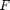
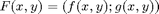
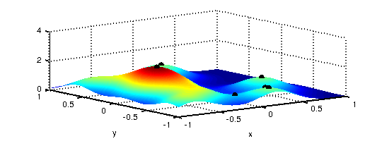
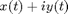
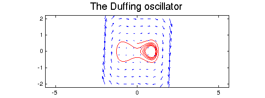

CHEBFUN2 GUIDE 5: VECTOR CALCULUS
A. Townsend, March 2013
Contents
5.1 WHAT IS A CHEBFUN2V?
Chebfun2v objects represent vector valued functions. We use a lower case letter, , for a chebfun2 object and an upper case letter, , for a chebfun2v object.
Chebfun2v represents a vector-valued function  by approximating each component by a low rank approximant. There are two ways to form a chebfun2v object: either by explicitly calling the constructor or by vertical concatenation of two chebfun2 objects. Here are these two alternatives:
d = [0 1 0 2]; F = chebfun2v(@(x,y) sin(x.*y), @(x,y) cos(y),d); % calling the constructor f = chebfun2(@(x,y) sin(x.*y),d); g = chebfun2(@(x,y) cos(y),d); G = [f;g] % vertical concatenation
G =
chebfun2v object (Column vector)
x_component =
chebfun2 object: (1 smooth surface)
domain rank corner values
[ 0, 1] x [ 0, 2] 7 [8.6e-24 9.3e-17 5.2e-17 0.91]
vertical scale = 1
y_component =
chebfun2 object: (1 smooth surface)
domain rank corner values
[ 0, 1] x [ 0, 2] 1 [ 1 1 -0.42 -0.42]
vertical scale = 1
Displaying a chebfun2v shows that it is a vector of two chebfun2 objects.
5.2 ALGEBRAIC OPERATIONS
Chebfun2v objects are useful for performing 2D vector calculus. The basic algebraic operations are scalar multiplication, vector addition, dot product and cross product.
Scalar multiplication is the product of a scalar function with a vector function:
f = chebfun2(@(x,y) exp( -(x.*y).^2/20 ) ,d); f.*F
ans =
chebfun2v object (Column vector)
x_component =
chebfun2 object: (1 smooth surface)
domain rank corner values
[ 0, 1] x [ 0, 2] 8 [-8e-24 9.3e-17 7.3e-17 0.74]
vertical scale = 1
y_component =
chebfun2 object: (1 smooth surface)
domain rank corner values
[ 0, 1] x [ 0, 2] 7 [ 1 1 -0.42 -0.34]
vertical scale = 1
Vector addition yields another chebfun2v and satisfies the parallelogram law:
plaw = abs((2*norm(F)^2 + 2*norm(G)^2) - (norm(F+G)^2 + norm(F-G)^2));
fprintf('Parallelogram law holds with error = %10.5e\n',plaw)
Parallelogram law holds with error = 0.00000e+00
The dot product combines two vector functions into a scalar function. If the dot product of two chebfun2v objects takes the value zero at some (x,y) then the vector valued functions are orthogonal at (x,y). For example, the following code segment determines a curve along which two vector-valued functions are orthogonal:
F = chebfun2v(@(x,y) sin(x.*y), @(x,y) cos(y),d);
G = chebfun2v(@(x,y) cos(4*x.*y), @(x,y) x + x.*y.^2,d);
plot(roots(dot(F,G))), axis equal, axis(d)
The cross product for 2D vector fields is
help chebfun2v/cross
CROSS Vector cross product.
f = cross(F,G) returns the cross product of the chebfun2v objects
F and G. If F and G both have two components then it returns the chebfun2
representing
CROSS(F,G) = F(1)*G(2) - F(2)*G(1)
where F = (F(1);F(2)) and G = (G(1); G(2)). If F and G have three
components then it returns the chebfun2v representing the 3D cross
product.
5.3 DIFFERENTIAL OPERATIONS
Vector calculus also involves various differential operators defined on scalar or vector valued functions such as gradient, curl, divergence, and Laplacian.
The gradient of a chebfun2 is, geometrically, the direction and magnitude of steepest ascent of f. If the gradient of f is 0 at (x,y) then f has a critical point at (x,y). Here are the critical points of a sum of Gaussian bumps:
f = chebfun2(0); for k = 1:10 x0 = 2*rand-1; y0=2*rand-1; f = f + chebfun2(@(x,y) exp(-10*((x-x0).^2 + (y-y0).^2))); end plot(f), hold on r = roots(gradient(f)); plot3(r(:,1),r(:,2),f(r(:,1),r(:,2)),'k.','markersize',20) zlim([0 4]), hold off
The curl of 2D vector function is a scalar function defined by
help chebfun2v/curl
CURL curl of a chebfun2v
S = CURL(F) returns the chebfun2 of the curl of F. If F is a chebfun2v
with two components then it returns the chebfun2 representing
CURL(F) = F(2)_x - F(1)_y,
where F = (F(1),F(2)). If F is a chebfun2v with three components then it
returns the chebfun2v representing the 3D curl operation.
If the chebfun2v F describes a vector velocity field of fluid flow, for example, then curl(F) is the scalar function equal to twice the angular speed of a particle in the flow at each point. A particle moving in a gradient field has zero angular speed and hence, the curl of the gradient is zero. We can check this numerically:
norm(curl(gradient(f)))
ans =
0
The divergence of a chebfun2v is defined as
help chebfun2v/divergence
DIVERGENCE the divergence of a chebfun2v. F = DIVERGENCE(F) returns the divergence of the chebfun2v i.e. divergence(F) = F_x + F_y
This measures a vector field's distribution of sources or sinks. The Laplacian is closely related and is the divergence of the gradient,
norm(laplacian(f) - divergence(gradient(f)))
ans =
0
5.4 LINE INTEGRALS
Given a vector field F we can compute the line integral along a curve with the command integral, as defined as
help chebfun2v/integral
INTEGRAL line integration of a chebfun2v
INTEGRAL(F,C) computes the line integral of F along the curve C, that is
/
INTEGRAL(F,C) = | < F(r), dr >
/
C
where the curve C is parameterised by the complex curve r(t).
The gradient theorem says that if F is a gradient field then the line integral along a smooth curve only depends on the end points of that curve. We can check this numerically:
f = chebfun2(@(x,y) cos(10*x.*y.^2) + exp(-x.^2));% chebfun2 object F = gradient(f); % gradient (chebfun2v) C = chebfun(@(t) t.*exp(10i*t),[0 1]); % spiral curve v = integral(F,C);ends = f(cos(10),sin(10))-f(0,0);% line integral abs(v-ends) % gradient theorem
ans =
4.440892098500626e-16
5.5 PHASE PORTRAIT
A phase portrait is a graphical representation of a system of trajectories for a two variable autonomous dynamical system. Note there is an unfortunate double meaning to "phase portrait" it can either mean a phase portrait of a complex-valued function (see chapter 4 of the guide) or a graphical representation of an autonomous system. In this section we are talking about autonomous systems. In Chebfun2 we can plot phase portraits by using the quiver command, which has been overloaded to plot the vector field.
In addition, Chebfun2 makes it easy to compute and plot individual trajectories of a vector field. If F is a chebfun2v, then ode45(F,tspan,y0) solves the autonomous system dx/dt=f(x,y), dy/dt=g(x,y), where f and g are the first and second components of F. Given a prescribed time interval and initial conditions, this command returns a complex valued chebfun representing the trajectory in the form . For example:
d = 0.04; a=1; b=-.75; F = chebfun2v(@(x,y)y, @(x,y)-d*y - b*x - a*x.^3, [-2 2 -2 2]); [t y]=ode45(F,[0 40],[0,.5]); plot(y,'r'), hold on, quiver(F,'b'), axis equal title('The Duffing oscillator','FontSize',16), hold off
5.6 MORE INFORMATION
More information on vector calculus in Chebfun2 is available in the Chebfun2 Examples. Vector calculus is also described in [Townsend & Trefethen 2013]. For more details about particular commands type, for instance,
help chebfun2v/plus
+ PLUS of two chebfun2v objects. F + G if F and G are chebfun2v objects does componentwise addition. F + G if F is a double and G is a chebfun2v does componentwise addition. F + G if F is a chebfun2v and G is a double does componentwise addition. plus(F,G) is called for the syntax F + G.
5.7 REFERENCES
[Townsend & Trefethen 2013] A. Townsend and L. N. Trefethen, An extension of Chebfun to two dimensions, submitted.